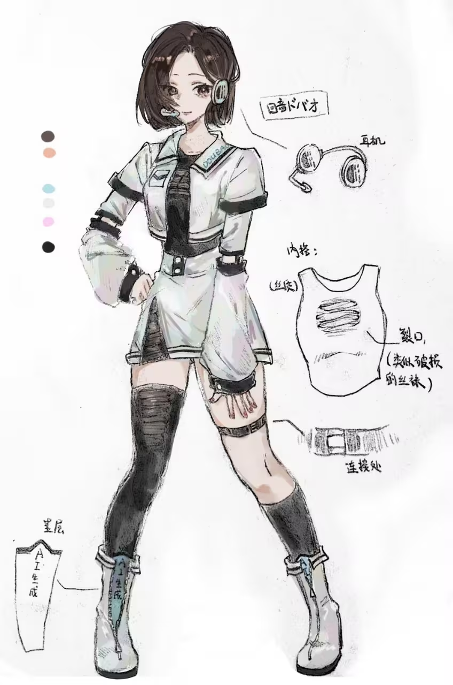
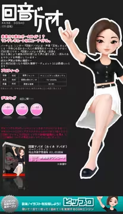

CHARACTER PROFILE
キャラクター紹介
KANE DOUBAO（豆包）は、中国語CVVCを中心に設計されたUTAU向け音声ライブラリです。透明感のある音色と粒立ちのある発音が特長で、ポップスやエレクトロ系のカバー制作に適しています。このページでは、設定情報・配布先・二次創作向けの参照情報をまとめています。
- 名前：KANE DOUBAO / 豆包
- ライブラリ形式：UTAU CVVC
- 対応言語：中国語中心（他言語調声にも対応可能）
- おすすめ用途：カバー投稿 / 二次創作企画 / 調声練習


UTAU 音源配布
doubao CVVCは、明るい主音と子音遷移のつながりを重視したUTAU用音源です。高速テンポの曲や電子系アレンジでも輪郭が出しやすい設計です。
- 収録方式：CVVC
- 対応ソフト：UTAU / OpenUTAU
- 想定ジャンル：中華ポップス / 日本語カバー / 実験調声
配布ページ：
doubao CVVC 音源配布ページへ制作者：会飞的六腿青蛙（Bilibili）
立ち絵作者情報
作者ページ：
Bilibiliの作者ページを開く作者：-横膈膜纵裂-（Bilibili UID: 3546557559343872）
作品紹介
外部プレイヤー仕様[UTAU豆包] うそつきマカロン（说谎的马卡龙）
サイトポリシー / 著作権表示
本サイトは個人による二次創作ファンサイトであり、いかなる公式運営主体にも所属しません。キャラクター紹介、作品リンク、学習目的の情報整理に限定して公開しています。
- 本サイトは非商用です。音源販売、広告収益化、有料配布は行いません。
- 音源・立ち絵・動画等の権利は各権利者に帰属し、本サイトはリンクおよび埋め込み表示のみを行います。
- 動画表示にはBilibili公式外部プレイヤーを使用し、再配布・透かし除去・無断ダウンロードは提供しません。
- 権利者から修正・削除要請があった場合、確認後すみやかに対応します。
- 本サイト経由で素材を利用する場合、利用者自身が許諾範囲を確認し、自己責任で利用してください。
法的根拠・プラットフォーム規約（要約）
- 著作権法改正の公布（主席令第62号）： 中国政府網
- 情報ネットワーク伝達権保護条例（例：第2条・第10条・第14-15条）： 国家版権局
- Bilibiliユーザー利用規約（権利保証・侵害対応）： bilibili 利用規約
- Bilibili外部プレイヤー仕様： player.bilibili.com
本記載は一般的な注意喚起であり、法的助言ではありません。商用利用や権利紛争は専門家へご相談ください。